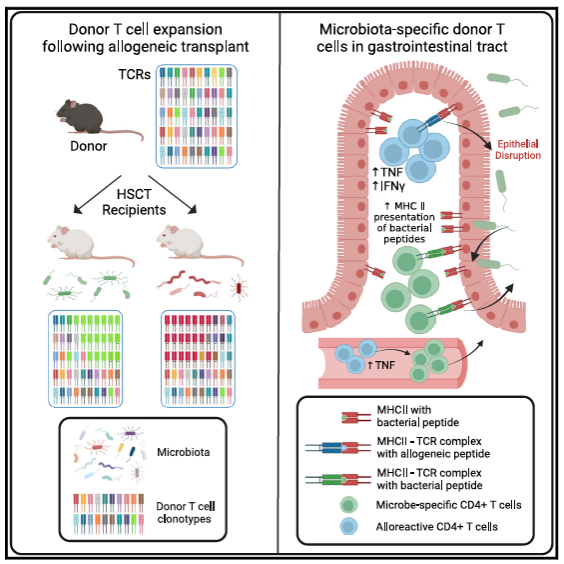
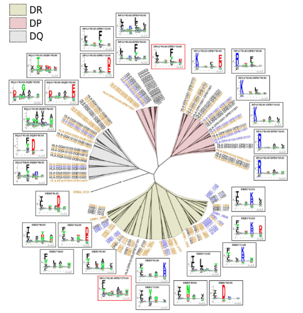
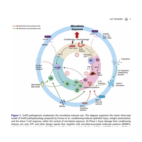
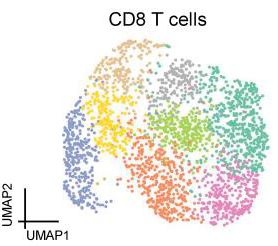

We study what happens next — how T cells recognize microbial antigens after allogeneic stem cell transplantation, and why that decides between graft-versus-host disease and durable immunity.
Fred Hutchinson Cancer Center · Seattle
Research

GVHD has long been explained by donor–host genetic disparity. We showed the microbiota independently shapes which T cell clones expand — meaning part of the immune conflict is aimed at microbes, not the patient.

If T cells respond to bacterial antigens, which ones? Mass spectrometry, MHC binding prediction and bacterial genomics to name the peptides presented after transplant.

Host and microbe meet across a few hundred microns of intestine. Spatial transcriptomics with custom bacterial probes maps immune cells and the microbes they encounter in one section.

What we learn about antigen recognition feeds back into treatment — separating graft-versus-tumor benefit from graft-versus-host toxicity.
“Some of the immune conflict after transplant isn't aimed at the patient at all. It's aimed at their microbes.”
Immunity, 2024Publications
Microbiota dictate T cell clonal selection to augment graft-versus-host disease after stem cell transplant
Yeh AC, et al.
Eomesodermin+ CD4+ T cells are critical for curative immunotherapy outcomes
Zhang P, et al.
Targeting donor XCR1+ and CD11b+ dendritic cells prevents Th1- and Th17-dependent GVHD
Takahashi S, et al.
Depletion of exhausted alloreactive T cells enables targeting of stem-like memory T cells
Minnie SA, et al.
CMV exposure drives long-term CD57+ CD4 memory T-cell inflation after allogeneic transplant
Yeh AC, et al.
Principal Investigator
A physician-scientist in the Translational Science and Therapeutics Division at Fred Hutch, caring for patients through allogeneic stem cell transplantation while leading a laboratory on microbial antigen recognition after transplant. Work published in Immunity, Blood, Science Immunology and the Journal of Clinical Investigation.
We are a new group, which means the people who join now will shape what it becomes. Projects are genuinely their own, the questions are open, and you will work directly with the PI.
Recruiting postdoctoral fellows and research technicians in immunology, microbiology or computational biology. UW and Fred Hutch students welcome to enquire about rotations.
ayeh@fredhutch.org